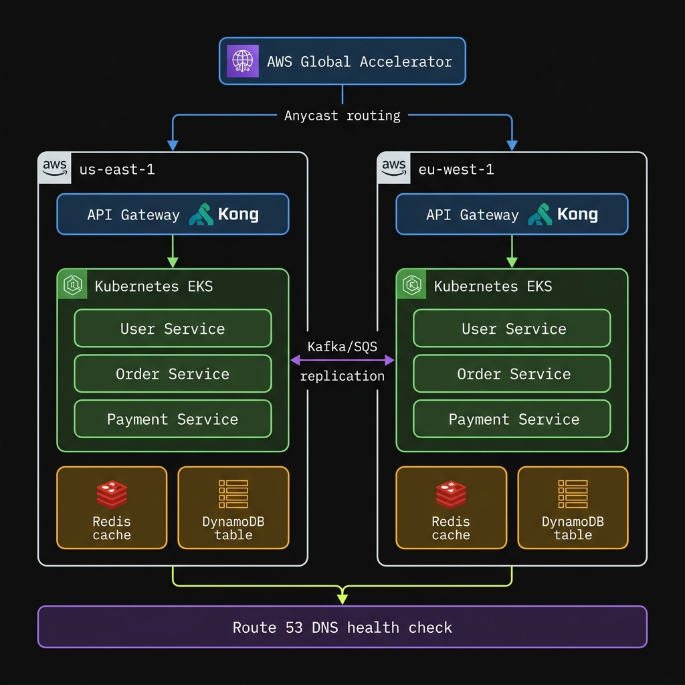

DevOps · Architecture · Interview
5 Senior DevOps Questions — Answered with Real Architecture
Each answer is structured the way you'd reason through it in a system design round: what the interviewer is actually testing, a TL;DR, a layered deep-dive, and the trade-offs that separate senior answers.
In this post
Q1 ↗
Multi-Region Microservices Architecture
EKS
Global Accelerator
DynamoDB
Kafka
Q2 ↗
Multi-Cloud / Hybrid Migration Planning
Terraform
Risk Matrix
Anthos
Q3 ↗
IaC Module & Environment Structure
Terraform
Monorepo
S3 State
Q4 ↗
Blue/Green vs Canary vs Rolling
Blue/Green
Canary
Rolling
Q5 ↗
Build Internal Tooling vs Managed Tools
TCO
Compliance
Hybrid Approach
💡 How to read this: Each question follows the same structure — what the interviewer is testing → TL;DR → numbered deep-dive sections → real examples and trade-offs. Use the sidebar to jump between questions.
Question 1 · Architecture
How would you design a scalable, fault-tolerant multi-region microservices architecture?
Target: <100ms global latency · 99.99% uptime · auto-scaling across regions
AWS Global Accelerator
EKS
Istio
DynamoDB Global Tables
Kafka
ArgoCD
What the interviewer is testing: Whether you treat this as a layered systems problem. Traffic routing, compute scaling, data consistency, and observability all have distinct failure modes. Candidates who just list AWS services score lower than those who show they understand why each layer exists.
TL;DR
- Global Accelerator routes to nearest healthy region via anycast over AWS backbone
- Per-region EKS with HPA (5–100 pods) + cluster autoscaler (3–50 nodes at CPU >70%)
- Istio service mesh handles mTLS, retries, and circuit breaking between services
- DynamoDB Global Tables + Kafka for async cross-region event replication
- ArgoCD canary for version rollouts; Route 53 health checks for regional failover (<60s)
- Trade-off: ~2× cost. Start with 2 regions, expand only with real traffic distribution data

AWS Global Accelerator → Kong API Gateway → EKS (per region) · Kafka cross-region replication · Route 53 health checks
1Infrastructure Layer — Scalability
Managed Kubernetes per region, provisioned via Terraform
Deploy EKS clusters per region using Terraform for reproducible provisioning. Node groups autoscale from 3→50 nodes at CPU >70%. Configure HPA per deployment:
minReplicas: 5, maxReplicas: 100. The critical design constraint: regions must be independently opaque to each other — a failure in us-east-1 must not cascade to eu-west-1. This means zero synchronous cross-region calls in the critical path.2Networking Layer — Minimize Latency
Global Accelerator + Istio service mesh + Kong API Gateway
AWS Global Accelerator publishes two static anycast IPs routing each user to the nearest healthy endpoint over AWS's private backbone (not public internet). Inside each region, Istio enforces inter-service mTLS, circuit breaking, and traffic shifting at the sidecar level — without application code changes. Kong caches responses in Redis, achieving <50ms edge latency for repeated requests.
The service mesh is what most candidates skip. It enforces retries and timeouts uniformly across all services, preventing cascading failures when a downstream service degrades.
The service mesh is what most candidates skip. It enforces retries and timeouts uniformly across all services, preventing cascading failures when a downstream service degrades.
3Deployment Layer — Zero Downtime
ArgoCD canary rollouts vs Route 53 failover — two different scopes
ArgoCD manages version rollouts within a region: deploy v2 to 10% of eu-west-1 traffic, monitor Prometheus error rates for 15 minutes, ramp to 100% if stable. Rollback is a single Git revert.
Route 53 health checks manage regional availability: if a region's health check fails, Route 53 shifts DNS weight away in <60 seconds. These compose cleanly — ArgoCD controls which version runs, Route 53 controls whether a region serves traffic at all. Confusing the two is a common interview mistake.
Route 53 health checks manage regional availability: if a region's health check fails, Route 53 shifts DNS weight away in <60 seconds. These compose cleanly — ArgoCD controls which version runs, Route 53 controls whether a region serves traffic at all. Confusing the two is a common interview mistake.
4Data Layer — Consistency & Resilience
Eventual consistency via CQRS + DynamoDB Global Tables + Kafka
The key design decision is your consistency model. Strong consistency across regions requires distributed transactions — slow, expensive, complex. Eventual consistency via CQRS/ES is fast but requires application logic to handle stale reads.
Each region writes to its local DynamoDB Global Table, which replicates asynchronously to all other regions. Kafka replicates domain events cross-region with dead-letter queues for retry on delivery failure. Reads always hit the local region's replica — latency stays low, but a write from us-east-1 may not be visible in eu-west-1 for a few hundred milliseconds.
Each region writes to its local DynamoDB Global Table, which replicates asynchronously to all other regions. Kafka replicates domain events cross-region with dead-letter queues for retry on delivery failure. Reads always hit the local region's replica — latency stays low, but a write from us-east-1 may not be visible in eu-west-1 for a few hundred milliseconds.
5Observability — Proactive Failure Detection
Prometheus federation + ELK + Litmus chaos engineering
Regional Prometheus instances federate into a central aggregator. ELK ingests structured logs from all regions. Alert on latency >200ms via PagerDuty with auto-remediation (drain unhealthy pods).
The part most architecture answers skip: chaos engineering with Litmus. Inject failures in staging — node kill, network partition, pod kill — and measure whether your failover actually behaves as designed. Don't trust the design until the chaos tests pass.
The part most architecture answers skip: chaos engineering with Litmus. Inject failures in staging — node kill, network partition, pod kill — and measure whether your failover actually behaves as designed. Don't trust the design until the chaos tests pass.
⚠️ Cost trade-off: Multi-region doubles approximate infrastructure cost (compute, data transfer, redundant tooling). Start with 2 regions. Expand based on real traffic geographic data — not assumptions about where users are. Validate with Locust load tests before going live.
Question 2 · Cloud Strategy
We host everything on one cloud. How would you plan a multi-cloud or hybrid migration?
Target: Structured evaluation, phased migration, no business disruption
AWS Cost Explorer
Terraform
Aviatrix
Anthos
Azure DMS
What the interviewer is testing: Whether you jump straight to tooling (Terraform, Anthos) or correctly start at the business and risk layer. Candidates who open with "we'd use Terraform to provision both clouds" are skipping the hard part.
TL;DR
- Start with a workload audit — you cannot plan what you haven't inventoried
- Score each workload on risk vs. benefit; move low-risk workloads first
- Run PoCs for critical migration paths before committing to the full roadmap
- Phase: lift-and-shift → refactor → retire. Each phase 3–6 months with explicit rollback plans
- Honest caveat: most teams shouldn't do multi-cloud unless there's a concrete forcing function
1Evaluation Phase — Before Touching Anything
Step 1: Audit
Step 2: Score
Step 3: PoC
Step 4: Gap Analysis
1. Current State Audit
Inventory every workload using
AWS Cost Explorer, Azure Migrate, or GCP Migration Center. Capture: service dependencies, monthly cost, performance SLAs, and owner teams. You cannot plan a migration without this baseline — guessing creates expensive surprises mid-project.2. Risk & Benefit Scoring Matrix
Score each workload 1–5 across: data sovereignty, vendor lock-in depth, uptime requirements, and migration complexity. High-risk workloads (PCI-compliant DBs, undocumented monoliths) stay single-cloud in Phase 1. Low-risk candidates move first: dev environments, static frontends, batch jobs.
3. Gap Analysis + Proof of Concept
Map services to target equivalents:
AWS S3 → Azure Blob Storage, RDS → Cloud SQL, Lambda → Cloud Functions. Identify where 1:1 equivalents don't exist. Run a 2-week PoC for critical paths — incompatibilities found mid-migration are 10× more expensive than discovering them in a PoC.2Planning Phase — Architecture & Roadmap
Phase A: Lift & Shift
Phase B: Refactor
Phase C: Retire
Three-phase migration
Phase A — Lift and shift non-critical workloads (dev environments, internal tools, batch jobs). Minimal re-architecture, fast to execute.
Phase B — Refactor stateful services: move to Kubernetes (EKS/AKS) for portability. Abstract data access behind service interfaces to decouple from provider-specific storage. Timeline: 3–6 months per wave.
Phase C — Retire workloads that can be replaced by a managed SaaS — don't migrate what you can eliminate. Every phase needs an explicit rollback plan before starting.
Phase B — Refactor stateful services: move to Kubernetes (EKS/AKS) for portability. Abstract data access behind service interfaces to decouple from provider-specific storage. Timeline: 3–6 months per wave.
Phase C — Retire workloads that can be replaced by a managed SaaS — don't migrate what you can eliminate. Every phase needs an explicit rollback plan before starting.
Cross-cloud toolchain
Terraform — portable IaC across AWS, Azure, GCP, VMware
Aviatrix / Megaport — private cross-cloud transit
Anthos / Azure Arc — unified Kubernetes control plane
AWS DMS / Striim — streaming replication during migration with zero downtime
Aviatrix / Megaport — private cross-cloud transit
Anthos / Azure Arc — unified Kubernetes control plane
AWS DMS / Striim — streaming replication during migration with zero downtime
3Real Examples
| Scenario | Approach | Key Tool | Outcome |
|---|---|---|---|
| Multi-cloud | Compute stays on AWS; ML inference migrated to GCP for BigQuery ML | Anthos for unified K8s | 40% ML latency improvement; unified control plane |
| Hybrid | Analytics: on-prem Hadoop → Azure Synapse; PII data stays on-prem (compliance) | Azure Data Factory | Cloud elasticity for batch; compliance requirements maintained |
⚠️ The honest take: Don't do multi-cloud unless there's a concrete forcing function. Operational complexity roughly doubles. Every service abstracted across clouds must be understood in two flavours by your ops team. Legitimate reasons: cloud-specific capabilities (GCP BigQuery), regulatory geo-restrictions, vendor negotiation leverage.
Question 3 · Infrastructure as Code
How do you structure IaC modules and environments to maximize reuse, safety, and clarity?
Target: 80%+ code reuse · isolated prod state · new engineer productive in <1 hour
Terraform
Monorepo
S3 Remote State
DynamoDB Lock
Git Tags
What the interviewer is testing: Most candidates describe what Terraform can do. Strong answers describe a specific, opinionated directory structure and explain the reasoning behind every decision — especially why they chose directories over workspaces.
TL;DR
- Monorepo:
modules/(reusable) +environments/(composition) +global/(shared) - Separate directories per environment — not Terraform workspaces — for true blast-radius isolation
- Remote state in S3 per environment, DynamoDB lock to prevent concurrent apply corruption
- Modules referenced by Git tag in prod — never local paths — to prevent silent drift
- Secrets via Vault or AWS SSM Parameter Store, never in
.tfvars
1Monorepo Directory Structure
infrastructure/
├── modules/ # Reusable, parameterized, versioned modules
│ ├── vpc/
│ │ ├── main.tf # resource definitions
│ │ ├── variables.tf # all inputs parameterized
│ │ └── outputs.tf # outputs for cross-module refs
│ ├── eks-cluster/
│ └── rds-instance/
│
├── environments/ # Environment-specific composition only
│ ├── dev/
│ │ ├── main.tf # calls modules with dev config
│ │ ├── terraform.tfvars # t3.micro, 1 AZ, no HA
│ │ └── backend.tf # state → s3://tf-state-dev
│ ├── staging/
│ │ ├── main.tf
│ │ ├── terraform.tfvars # m5.large, 2 AZs, mirrors prod topology
│ │ └── backend.tf # state → s3://tf-state-staging
│ └── prod/
│ ├── main.tf
│ ├── terraform.tfvars # m5.4xlarge, 3 AZs, multi-AZ RDS
│ └── backend.tf # state → s3://tf-state-prod + DynamoDB lock
│
├── global/ # Shared cross-env (IAM roles, DNS zones)
│ └── main.tf
└── README.md # Module conventions, naming, how to add an env
2Why Directories Over Workspaces
Workspaces share code. Directories don't.
Terraform workspaces use identical
.tf files with different state backends. A misconfigured variable in a shared file affects every environment simultaneously. Separate directories make each environment a fully independent deployable unit: cd environments/prod && terraform apply. The blast radius of any mistake is explicitly bounded to that directory.3Remote State & Locking
📄 environments/prod/backend.tf
terraform {
backend "s3" {
bucket = "tf-state-prod-123456789"
key = "infrastructure/terraform.tfstate"
region = "us-east-1"
dynamodb_table = "tf-lock-prod" # prevents concurrent applies corrupting state
encrypt = true
}
}4Module Versioning via Git Tags
📄 environments/prod/main.tf — pinned to release tag
module "vpc" {
# Pin to release tag — prod can never silently pick up unreviewed module changes
source = "git::https://github.com/org/infra-modules.git//vpc?ref=v1.4.2"
cidr = var.vpc_cidr
azs = var.availability_zones
}
module "eks" {
source = "git::https://github.com/org/infra-modules.git//eks-cluster?ref=v1.4.2"
instance_type = var.node_instance_type # m5.4xlarge from prod.tfvars
min_nodes = var.min_nodes # 3 in prod.tfvars
vpc_id = module.vpc.vpc_id # cross-module reference
}
The biggest structural win is onboarding speed. A new engineer opens
environments/prod/main.tf, reads 30 lines of module calls, and understands exactly what's deployed — every resource traceable to a specific versioned module. No reading 4,000 lines of flat Terraform to understand production.
Question 4 · Deployments
What are the trade-offs between Blue/Green, Canary, and Rolling deployments?
Target: Match strategy to context — not just define each one
Blue/Green
Canary
Rolling
ArgoCD
Istio
What the interviewer is testing: Whether you can map deployment strategy to application context — statelessness, team monitoring maturity, infrastructure cost, and rollback time requirements all determine the right answer. Candidates who only define the three strategies without discussing trade-offs give weak answers.
TL;DR
- Blue/Green: safest rollback, instant cutover — but ~2× infra cost and painful with DB migrations
- Canary: real-user validation before full rollout — but requires mature observability and is slower
- Rolling: zero extra resources, in-place — but no instant rollback and mixed-version risk
- The hidden question interviewers ask: "How long does rollback take?" Only Blue/Green answers: seconds
1At-a-Glance Comparison
🔵 Blue / Green
- Two full parallel environments
- Instant cutover via LB / DNS flip
- Instant rollback guaranteed
- ~2× infrastructure cost
- DB schema changes are complex
- Both envs must support old + new schema
🐦 Canary
- Route % of real users to v2
- Catches issues unit tests miss
- Needs traffic splitting (Istio / ALB)
- Slower full rollout
- Requires mature observability
- Rollback = re-routing, not instant
🔄 Rolling
- Replace pods/instances in batches
- No extra resources needed
- Brief mixed-version window
- Rollback = re-rolling the fleet
- Best for stateless, backwards-compat APIs
- Lowest cost, highest frequency suitability
2Decision Matrix
| Strategy | Use When | Avoid When | Rollback Time |
|---|---|---|---|
| Blue/Green | High-traffic apps, instant rollback non-negotiable, stateless services with clear LB cutover | Coupled DB schema migrations — both envs must support old + new schema simultaneously | Seconds |
| Canary | User-facing features where real production traffic validates correctness better than synthetic tests | Team lacks observability to detect problems at 5% traffic volume before they spread | Minutes |
| Rolling | Stateless backend microservices; high-frequency low-risk updates; cost-constrained environments | Incompatible API versions — mixed v1/v2 window is then a direct source of errors | Minutes–hours |
3Real Examples at Scale
Netflix — Blue/Green for 200M+ user reliability
Netflix deploys infrastructure updates to a full green environment, validates with synthetic traffic, then switches 100% of load balancer traffic. Blue stays warm for 30 minutes as an instant rollback target. With 200M users, 1 minute of degradation has measurable revenue impact — the 2× infrastructure cost is directly justified by that SLA.
Etsy — Canary with automated business metric rollback
Etsy's search team routes 5% of traffic to a new relevance model, monitoring real click-through rates simultaneously. If click-through degrades >2%, the canary auto-rolls back. The key insight: unit tests cannot validate search relevance. User behaviour in production is the only ground truth — and canary is the only strategy that gives you that signal safely.
AWS Elastic Beanstalk — Rolling for cost-efficient API fleet updates
Beanstalk replaces EC2 instances in configurable batches (e.g., 25% at a time), draining connections before terminating each batch. No spare capacity required — cost-efficient for stateless HTTP API backends. The constraint: during the rollout window, v1 and v2 serve traffic simultaneously, so your API must be fully backwards-compatible at all times.
⚠️ Frame your answer around rollback time, not just definitions: Blue/Green = seconds. Canary = re-route traffic = minutes. Rolling = re-roll the fleet = minutes to hours depending on batch size. Interviewers want to know you understand the recovery time objective, not just the deployment mechanics.
Question 5 · Engineering Judgment
How do you decide when to build internal tooling vs use a managed or third-party tool?
Target: A structured decision framework — not a blanket preference for either approach
TCO Analysis
Compliance
Hybrid Approach
Time to Value
What the interviewer is testing: Judgment and pragmatism. "We always prefer open-source" and "we always buy" are both wrong answers. The right answer is a framework for a specific context — and the self-awareness to acknowledge what most engineering teams get wrong.
TL;DR
- Build when: requirements are genuinely unique, data must be air-gapped, it's a core differentiator
- Buy when: the problem is commoditised, speed matters, maintenance would distract from product work
- Hybrid is often correct: managed foundation + thin internal layer for org-specific policy only
- Most teams over-build. Maintenance debt compounds and consumes the engineers who should build product
1The Decision Framework
🔨 Build Internal When…
- Requirements are genuinely unique — building less customisation than the tool saves
- A core competitive differentiator — you want to own it as IP
- Data must remain air-gapped — compliance, sovereignty, or security prohibits third-party access
- Long-term TCO is lower and team has sustainable bandwidth to maintain it
🛒 Use Managed / Third-Party When…
- The problem is solved and commoditised — multiple mature vendors compete on this
- Speed to value matters more — days to integrate, not quarters to build
- Maintenance burden would distract from core product engineering
- Vendor provides compliance certs (SOC 2, PCI, FedRAMP) you'd otherwise earn independently
2Weighted Scoring — Use This in Interviews
| Factor | Signals Build | Signals Buy | Weight |
|---|---|---|---|
| Customisation depth | Unique / proprietary workflow | Standard requirements + minor tweaks | High |
| Time to value | Team has 3–6 months available | Need it working in 1–2 weeks | High |
| Maintenance overhead | Dedicated team, clear ownership | Vendor SLA; want zero ops burden | Medium |
| Total cost of ownership | Build TCO < subscription at scale | Subscription cheaper than eng + infra hours | High |
| Data sensitivity | Full control required; air-gapped | Standard data handling acceptable | Context-dependent |
3Three Real Examples
🔨 Build — Custom CI/CD orchestrator for fintech (air-gapped)
A firm with PCI-DSS and FedRAMP requirements cannot route deployment artefacts through a third-party CI/CD SaaS. They build an internal orchestrator integrating with their HSM, audit log systems, and change management DB. Cost: 3–6 months engineering time. Benefit: complete audit control, zero external data egress, certifiable pipeline.
🛒 Buy — Monitoring with Datadog instead of homegrown stack
Building a production-grade monitoring stack (ingest, time-series storage, anomaly detection, dashboards, alerting, on-call routing) for a Kubernetes fleet requires 3–5 dedicated platform engineers with ongoing maintenance. Datadog installs via a 10-minute Helm chart, provides pre-built Kubernetes dashboards, and handles petabyte-scale ingestion. The build-vs-buy math is unambiguous.
⚡ Hybrid — Internal GitOps controller wrapping ArgoCD
A platform team wraps ArgoCD with a thin internal controller that adds org-specific policy: auto-approval gates tied to JIRA ticket status, custom RBAC via internal IdP, notifications to Slack with contextual runbook links. The core sync engine is ArgoCD (battle-tested). The internal layer covers only what's genuinely unique. This pattern — managed foundation, minimal internal surface area — is often the correct architecture.
🚨 Most important observation: Engineering teams systematically over-build. Building is intellectually stimulating — evaluating vendors is not. Teams default to build decisions without running real TCO numbers. A strong platform lead actively challenges unnecessary in-house builds, because every internal tool creates a maintenance obligation that compounds and eventually consumes the engineers who should be building product.